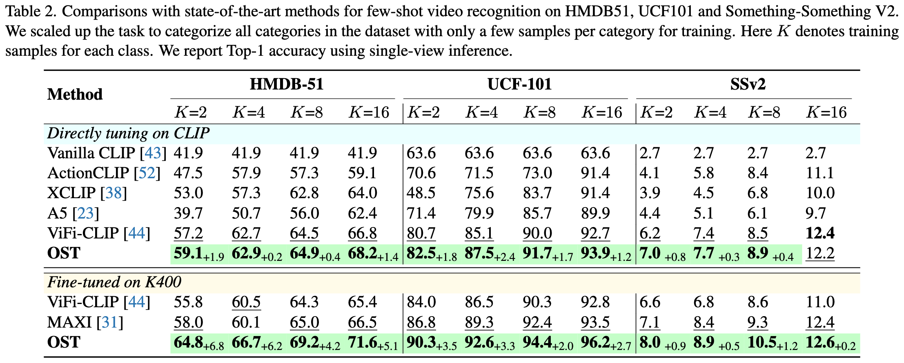

OST: Refining Text Knowledge with Optimal Spatio-Temporal
Descriptor for General Video Recognition

Abstract
Due to the resource-intensive nature of training vision-language models on expansive video data, a majority of studies have centered on adapting pre-trained image-language models to the video domain. Dominant pipelines propose to tackle the visual discrepancies with additional temporal learners while overlooking the substantial discrepancy for web-scaled descriptive narratives and concise action category names, leading to less distinct semantic space and potential performance limitations. In this work, we prioritize the refinement of text knowledge to facilitate generalizable video recognition. To address the limitations of the less distinct semantic space of category names, we prompt a large language model (LLM) to augment action class names into Spatio-Temporal Descriptors thus bridging the textual discrepancy and serving as a knowledge base for general recognition. Moreover, to assign the best descriptors with different video instances, we propose Optimal Descriptor Solver, forming the video recognition problem as solving the optimal matching flow across frame-level representations and descriptors. Comprehensive evaluations in zero-shot, few-shot, and fully supervised video recognition highlight the effectiveness of our approach. Our best model achieves a state-of-the-art zero-shot accuracy of 75.1% on Kinetics-600.
Overview

An overview of our pipeline for video recognition. We query the Large Language Model to augment category names to generate corresponding Category Descriptors. The descriptors disentangled category names into Spatio-Temporal Descriptors for static visual cues and temporal evolution, respectively. To fully refine the textual knowledge, we propose Optimal Descriptor Solver that adaptively aligns descriptors with video frames. An optimal matching flow is calculated through the iterative solving of the entropy-regularized OT problem to assign optimal descriptors for each video instance.
Quantitative Results
To demonstrate the effectiveness of our OST, we conduct comprehensive experiments on six benchmarks, including Kinetics-400 & 600, UCF-101, HMDB-51, Something-Something V2, and ActivityNet. The results indicate that our method achieves state-of-the-art performance in open-vocabulary tasks, e.g. zero-shot, few-shot, and also consistently improves the performance when combined with existing pipelines in fully-supervised settings.
Attention map on K600 validation set. We demonstrate Spatio Descriptors and Temporal Descriptors on the left and right, respectively. (Left): For videos that can be recognized via static frames, our OST attends to the certain object more while ViFi-CLIP is often distracted by the backgrounds. (Right): For classes that require more temporal clues, ViFi-CLIP attends to appearance (e.g. soccer ball and soccer field) more, while our OST shows consistent attention to the body's temporal salient parts such as the player's feet.
Generalization on extreme outliers. We utilize the text-to-video diffusion model Show-1 to generate synthetic videos with a semantic distribution distinct from the fine-tuning data in Kinetics-400 to further demonstrate the generalizability of our method. Attention map for Spatio Descriptors and Temporal Descriptors are visualized on the left and right, respectively.
Visualization of the adaptive transport plan. Our OD Solver not only integrates various visual cues—such as GPS devices, navigation trails in top figure, and hammer-swinging motions in bottom figure, but also greatly reduce the detrimental effects of the noisy descriptors that often arise from the hallucination issues associated with LLMs, such as misleading 'hidden treasures' in top figure or 'repeat the swinging' in bottom figure. It is important to note that while the absolute variances among transport plans are relatively small, their substantial relative differences are critical in optimal matching.
Paper
Tongjia Chen, Hongshan Yu, Zhengeng Yang, Zechuan Li, Wei Sun, Chen Chen.
Preprint
@article{
chen2023ost,
title={OST: Refining Text Knowledge with Optimal Spatio-Temporal Descriptor for General Video Recognition},
author={Tongjia Chen, Hongshan Yu, Zhengeng Yang, Zechuan Li, Wei Sun, Chen Chen.},
booktitle={Preprint},
year={2023},
}
Acknowledgements
The work was done while Tongjia was a research intern mentored by Chen Chen. The webpage template is adapted from POP.